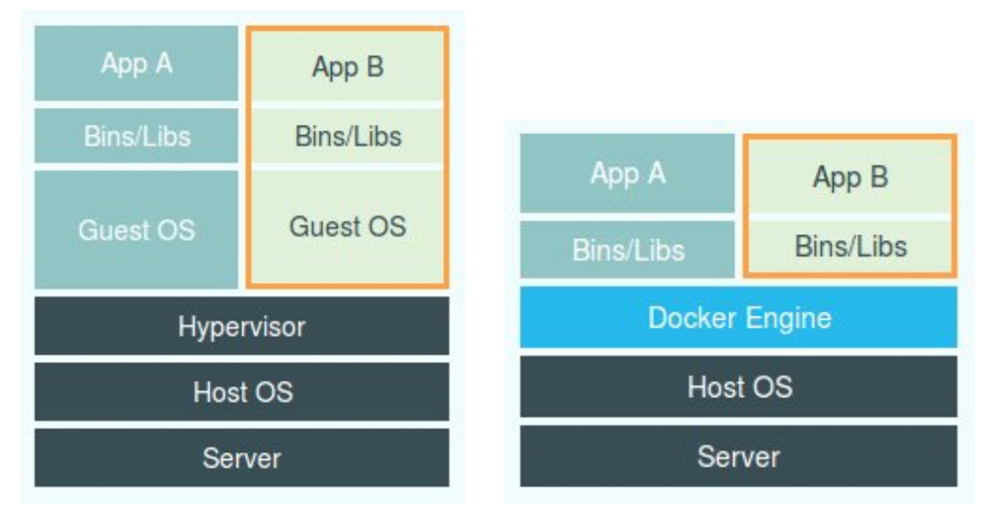

- 00 开篇词 打通“容器技术”的任督二脉.md
- 01 预习篇 · 小鲸鱼大事记（一）：初出茅庐.md
- 02 预习篇 · 小鲸鱼大事记（二）：崭露头角.md
- 03 预习篇 · 小鲸鱼大事记（三）：群雄并起.md
- 04 预习篇 · 小鲸鱼大事记（四）：尘埃落定.md
- 05 白话容器基础（一）：从进程说开去.md
- 06 白话容器基础（二）：隔离与限制.md
- 07 白话容器基础（三）：深入理解容器镜像.md
- 08 白话容器基础（四）：重新认识Docker容器.md
- 09 从容器到容器云：谈谈Kubernetes的本质.md
- 10 Kubernetes一键部署利器：kubeadm.md
- 11 从0到1：搭建一个完整的Kubernetes集群.md
- 12 牛刀小试：我的第一个容器化应用.md
- 13 为什么我们需要Pod？.md
- 14 深入解析Pod对象（一）：基本概念.md
- 15 深入解析Pod对象（二）：使用进阶.md
- 16 编排其实很简单：谈谈“控制器”模型.md
- 17 经典PaaS的记忆：作业副本与水平扩展.md
- 18 深入理解StatefulSet（一）：拓扑状态.md
- 19 深入理解StatefulSet（二）：存储状态.md
- 20 深入理解StatefulSet（三）：有状态应用实践.md
- 21 容器化守护进程的意义：DaemonSet.md
- 22 撬动离线业务：Job与CronJob.md
- 23 声明式API与Kubernetes编程范式.md
- 24 深入解析声明式API（一）：API对象的奥秘.md
- 25 深入解析声明式API（二）：编写自定义控制器.md
- 26 基于角色的权限控制：RBAC.md
- 27 聪明的微创新：Operator工作原理解读.md
- 28 PV、PVC、StorageClass，这些到底在说啥？.md
- 29 PV、PVC体系是不是多此一举？从本地持久化卷谈起.md
- 30 编写自己的存储插件：FlexVolume与CSI.md
- 31 容器存储实践：CSI插件编写指南.md
- 32 浅谈容器网络.md
- 33 深入解析容器跨主机网络.md
- 34 Kubernetes网络模型与CNI网络插件.md
- 35 解读Kubernetes三层网络方案.md
- 36 为什么说Kubernetes只有soft multi-tenancy？.md
- 37 找到容器不容易：Service、DNS与服务发现.md
- 38 从外界连通Service与Service调试“三板斧”.md
- 39 谈谈Service与Ingress.md
- 40 Kubernetes的资源模型与资源管理.md
- 41 十字路口上的Kubernetes默认调度器.md
- 42 Kubernetes默认调度器调度策略解析.md
- 43 Kubernetes默认调度器的优先级与抢占机制.md
- 44 Kubernetes GPU管理与Device Plugin机制.md
- 45 幕后英雄：SIG-Node与CRI.md
- 46 解读 CRI 与 容器运行时.md
- 47 绝不仅仅是安全：Kata Containers 与 gVisor.md
- 48 Prometheus、Metrics Server与Kubernetes监控体系.md
- 49 Custom Metrics_ 让Auto Scaling不再“食之无味”.md
- 50 让日志无处可逃：容器日志收集与管理.md
- 51 谈谈Kubernetes开源社区和未来走向.md
- 52 答疑：在问题中解决问题，在思考中产生思考.md
- 特别放送 2019 年，容器技术生态会发生些什么？.md
- 特别放送 基于 Kubernetes 的云原生应用管理，到底应该怎么做？.md
- 结束语 Kubernetes：赢开发者赢天下.md
06 白话容器基础（二）：隔离与限制
你好，我是张磊。我今天和你分享的主题是：白话容器基础之隔离与限制。
在上一篇文章中，我详细介绍了Linux容器中用来实现“隔离”的技术手段：Namespace。而通过这些讲解，你应该能够明白，Namespace技术实际上修改了应用进程看待整个计算机“视图”，即它的“视线”被操作系统做了限制，只能“看到”某些指定的内容。但对于宿主机来说，这些被“隔离”了的进程跟其他进程并没有太大区别。
说到这一点，相信你也能够知道我在上一篇文章最后给你留下的第一个思考题的答案了：在之前虚拟机与容器技术的对比图里，不应该把Docker Engine或者任何容器管理工具放在跟Hypervisor相同的位置，因为它们并不像Hypervisor那样对应用进程的隔离环境负责，也不会创建任何实体的“容器”，真正对隔离环境负责的是宿主机操作系统本身：

所以，在这个对比图里，我们应该把Docker画在跟应用同级别并且靠边的位置。这意味着，用户运行在容器里的应用进程，跟宿主机上的其他进程一样，都由宿主机操作系统统一管理，只不过这些被隔离的进程拥有额外设置过的Namespace参数。而Docker项目在这里扮演的角色，更多的是旁路式的辅助和管理工作。
我在后续分享CRI和容器运行时的时候还会专门介绍，其实像Docker这样的角色甚至可以去掉。
这样的架构也解释了为什么Docker项目比虚拟机更受欢迎的原因。
这是因为，使用虚拟化技术作为应用沙盒，就必须要由Hypervisor来负责创建虚拟机，这个虚拟机是真实存在的，并且它里面必须运行一个完整的Guest OS才能执行用户的应用进程。这就不可避免地带来了额外的资源消耗和占用。
根据实验，一个运行着CentOS的KVM虚拟机启动后，在不做优化的情况下，虚拟机自己就需要占用100~200 MB内存。此外，用户应用运行在虚拟机里面，它对宿主机操作系统的调用就不可避免地要经过虚拟化软件的拦截和处理，这本身又是一层性能损耗，尤其对计算资源、网络和磁盘I/O的损耗非常大。
而相比之下，容器化后的用户应用，却依然还是一个宿主机上的普通进程，这就意味着这些因为虚拟化而带来的性能损耗都是不存在的；而另一方面，使用Namespace作为隔离手段的容器并不需要单独的Guest OS，这就使得容器额外的资源占用几乎可以忽略不计。
所以说，“敏捷”和“高性能”是容器相较于虚拟机最大的优势，也是它能够在PaaS这种更细粒度的资源管理平台上大行其道的重要原因。
不过，有利就有弊，基于Linux Namespace的隔离机制相比于虚拟化技术也有很多不足之处，其中最主要的问题就是：隔离得不彻底。
首先，既然容器只是运行在宿主机上的一种特殊的进程，那么多个容器之间使用的就还是同一个宿主机的操作系统内核。
尽管你可以在容器里通过Mount Namespace单独挂载其他不同版本的操作系统文件，比如CentOS或者Ubuntu，但这并不能改变共享宿主机内核的事实。这意味着，如果你要在Windows宿主机上运行Linux容器，或者在低版本的Linux宿主机上运行高版本的Linux容器，都是行不通的。
而相比之下，拥有硬件虚拟化技术和独立Guest OS的虚拟机就要方便得多了。最极端的例子是，Microsoft的云计算平台Azure，实际上就是运行在Windows服务器集群上的，但这并不妨碍你在它上面创建各种Linux虚拟机出来。
其次，在Linux内核中，有很多资源和对象是不能被Namespace化的，最典型的例子就是：时间。
这就意味着，如果你的容器中的程序使用settimeofday(2)系统调用修改了时间，整个宿主机的时间都会被随之修改，这显然不符合用户的预期。相比于在虚拟机里面可以随便折腾的自由度，在容器里部署应用的时候，“什么能做，什么不能做”，就是用户必须考虑的一个问题。
此外，由于上述问题，尤其是共享宿主机内核的事实，容器给应用暴露出来的攻击面是相当大的，应用“越狱”的难度自然也比虚拟机低得多。
更为棘手的是，尽管在实践中我们确实可以使用Seccomp等技术，对容器内部发起的所有系统调用进行过滤和甄别来进行安全加固，但这种方法因为多了一层对系统调用的过滤，必然会拖累容器的性能。何况，默认情况下，谁也不知道到底该开启哪些系统调用，禁止哪些系统调用。
所以，在生产环境中，没有人敢把运行在物理机上的Linux容器直接暴露到公网上。当然，我后续会讲到的基于虚拟化或者独立内核技术的容器实现，则可以比较好地在隔离与性能之间做出平衡。
在介绍完容器的“隔离”技术之后，我们再来研究一下容器的“限制”问题。
也许你会好奇，我们不是已经通过Linux Namespace创建了一个“容器”吗，为什么还需要对容器做“限制”呢？
我还是以PID Namespace为例，来给你解释这个问题。
虽然容器内的第1号进程在“障眼法”的干扰下只能看到容器里的情况，但是宿主机上，它作为第100号进程与其他所有进程之间依然是平等的竞争关系。这就意味着，虽然第100号进程表面上被隔离了起来，但是它所能够使用到的资源（比如CPU、内存），却是可以随时被宿主机上的其他进程（或者其他容器）占用的。当然，这个100号进程自己也可能把所有资源吃光。这些情况，显然都不是一个“沙盒”应该表现出来的合理行为。
而Linux Cgroups就是Linux内核中用来为进程设置资源限制的一个重要功能。
有意思的是，Google的工程师在2006年发起这项特性的时候，曾将它命名为“进程容器”（process container）。实际上，在Google内部，“容器”这个术语长期以来都被用于形容被Cgroups限制过的进程组。后来Google的工程师们说，他们的KVM虚拟机也运行在Borg所管理的“容器”里，其实也是运行在Cgroups“容器”当中。这和我们今天说的Docker容器差别很大。
Linux Cgroups的全称是Linux Control Group。它最主要的作用，就是限制一个进程组能够使用的资源上限，包括CPU、内存、磁盘、网络带宽等等。
此外，Cgroups还能够对进程进行优先级设置、审计，以及将进程挂起和恢复等操作。在今天的分享中，我只和你重点探讨它与容器关系最紧密的“限制”能力，并通过一组实践来带你认识一下Cgroups。
在Linux中，Cgroups给用户暴露出来的操作接口是文件系统，即它以文件和目录的方式组织在操作系统的/sys/fs/cgroup路径下。在Ubuntu 16.04机器里，我可以用mount指令把它们展示出来，这条命令是：
$ mount -t cgroup
cpuset on /sys/fs/cgroup/cpuset type cgroup (rw,nosuid,nodev,noexec,relatime,cpuset)
cpu on /sys/fs/cgroup/cpu type cgroup (rw,nosuid,nodev,noexec,relatime,cpu)
cpuacct on /sys/fs/cgroup/cpuacct type cgroup (rw,nosuid,nodev,noexec,relatime,cpuacct)
blkio on /sys/fs/cgroup/blkio type cgroup (rw,nosuid,nodev,noexec,relatime,blkio)
memory on /sys/fs/cgroup/memory type cgroup (rw,nosuid,nodev,noexec,relatime,memory)
...
它的输出结果，是一系列文件系统目录。如果你在自己的机器上没有看到这些目录，那你就需要自己去挂载Cgroups，具体做法可以自行Google。
可以看到，在/sys/fs/cgroup下面有很多诸如cpuset、cpu、 memory这样的子目录，也叫子系统。这些都是我这台机器当前可以被Cgroups进行限制的资源种类。而在子系统对应的资源种类下，你就可以看到该类资源具体可以被限制的方法。比如，对CPU子系统来说，我们就可以看到如下几个配置文件，这个指令是：
$ ls /sys/fs/cgroup/cpu
cgroup.clone_children cpu.cfs_period_us cpu.rt_period_us cpu.shares notify_on_release
cgroup.procs cpu.cfs_quota_us cpu.rt_runtime_us cpu.stat tasks
如果熟悉Linux CPU管理的话，你就会在它的输出里注意到cfs_period和cfs_quota这样的关键词。这两个参数需要组合使用，可以用来限制进程在长度为cfs_period的一段时间内，只能被分配到总量为cfs_quota的CPU时间。
而这样的配置文件又如何使用呢？
你需要在对应的子系统下面创建一个目录，比如，我们现在进入/sys/fs/cgroup/cpu目录下：
root@ubuntu:/sys/fs/cgroup/cpu$ mkdir container
root@ubuntu:/sys/fs/cgroup/cpu$ ls container/
cgroup.clone_children cpu.cfs_period_us cpu.rt_period_us cpu.shares notify_on_release
cgroup.procs cpu.cfs_quota_us cpu.rt_runtime_us cpu.stat tasks
这个目录就称为一个“控制组”。你会发现，操作系统会在你新创建的container目录下，自动生成该子系统对应的资源限制文件。
现在，我们在后台执行这样一条脚本：
$ while : ; do : ; done &
[1] 226
显然，它执行了一个死循环，可以把计算机的CPU吃到100%，根据它的输出，我们可以看到这个脚本在后台运行的进程号（PID）是226。
这样，我们可以用top指令来确认一下CPU有没有被打满：
$ top
%Cpu0 :100.0 us, 0.0 sy, 0.0 ni, 0.0 id, 0.0 wa, 0.0 hi, 0.0 si, 0.0 st
在输出里可以看到，CPU的使用率已经100%了（%Cpu0 :100.0 us）。
而此时，我们可以通过查看container目录下的文件，看到container控制组里的CPU quota还没有任何限制（即：-1），CPU period则是默认的100 ms（100000 us）：
$ cat /sys/fs/cgroup/cpu/container/cpu.cfs_quota_us
-1
$ cat /sys/fs/cgroup/cpu/container/cpu.cfs_period_us
100000
接下来，我们可以通过修改这些文件的内容来设置限制。
比如，向container组里的cfs_quota文件写入20 ms（20000 us）：
$ echo 20000 > /sys/fs/cgroup/cpu/container/cpu.cfs_quota_us
结合前面的介绍，你应该能明白这个操作的含义，它意味着在每100 ms的时间里，被该控制组限制的进程只能使用20 ms的CPU时间，也就是说这个进程只能使用到20%的CPU带宽。
接下来，我们把被限制的进程的PID写入container组里的tasks文件，上面的设置就会对该进程生效了：
$ echo 226 > /sys/fs/cgroup/cpu/container/tasks
我们可以用top指令查看一下：
$ top
%Cpu0 : 20.3 us, 0.0 sy, 0.0 ni, 79.7 id, 0.0 wa, 0.0 hi, 0.0 si, 0.0 st
可以看到，计算机的CPU使用率立刻降到了20%（%Cpu0 : 20.3 us）。
除CPU子系统外，Cgroups的每一个子系统都有其独有的资源限制能力，比如：
- blkio，为块设备设定I/O限制，一般用于磁盘等设备；
- cpuset，为进程分配单独的CPU核和对应的内存节点；
- memory，为进程设定内存使用的限制。
Linux Cgroups的设计还是比较易用的，简单粗暴地理解呢，它就是一个子系统目录加上一组资源限制文件的组合。而对于Docker等Linux容器项目来说，它们只需要在每个子系统下面，为每个容器创建一个控制组（即创建一个新目录），然后在启动容器进程之后，把这个进程的PID填写到对应控制组的tasks文件中就可以了。
而至于在这些控制组下面的资源文件里填上什么值，就靠用户执行docker run时的参数指定了，比如这样一条命令：
$ docker run -it --cpu-period=100000 --cpu-quota=20000 ubuntu /bin/bash
在启动这个容器后，我们可以通过查看Cgroups文件系统下，CPU子系统中，“docker”这个控制组里的资源限制文件的内容来确认：
$ cat /sys/fs/cgroup/cpu/docker/5d5c9f67d/cpu.cfs_period_us
100000
$ cat /sys/fs/cgroup/cpu/docker/5d5c9f67d/cpu.cfs_quota_us
20000
这就意味着这个Docker容器，只能使用到20%的CPU带宽。
总结
在这篇文章中，我首先介绍了容器使用Linux Namespace作为隔离手段的优势和劣势，对比了Linux容器跟虚拟机技术的不同，进一步明确了“容器只是一种特殊的进程”这个结论。
除了创建Namespace之外，在后续关于容器网络的分享中，我还会介绍一些其他Namespace的操作，比如看不见摸不着的Linux Namespace在计算机中到底如何表示、一个进程如何“加入”到其他进程的Namespace当中，等等。
紧接着，我详细介绍了容器在做好了隔离工作之后，又如何通过Linux Cgroups实现资源的限制，并通过一系列简单的实验，模拟了Docker项目创建容器限制的过程。
通过以上讲述，你现在应该能够理解，一个正在运行的Docker容器，其实就是一个启用了多个Linux Namespace的应用进程，而这个进程能够使用的资源量，则受Cgroups配置的限制。
这也是容器技术中一个非常重要的概念，即：容器是一个“单进程”模型。
由于一个容器的本质就是一个进程，用户的应用进程实际上就是容器里PID=1的进程，也是其他后续创建的所有进程的父进程。这就意味着，在一个容器中，你没办法同时运行两个不同的应用，除非你能事先找到一个公共的PID=1的程序来充当两个不同应用的父进程，这也是为什么很多人都会用systemd或者supervisord这样的软件来代替应用本身作为容器的启动进程。
但是，在后面分享容器设计模式时，我还会推荐其他更好的解决办法。这是因为容器本身的设计，就是希望容器和应用能够同生命周期，这个概念对后续的容器编排非常重要。否则，一旦出现类似于“容器是正常运行的，但是里面的应用早已经挂了”的情况，编排系统处理起来就非常麻烦了。
另外，跟Namespace的情况类似，Cgroups对资源的限制能力也有很多不完善的地方，被提及最多的自然是/proc文件系统的问题。
众所周知，Linux下的/proc目录存储的是记录当前内核运行状态的一系列特殊文件，用户可以通过访问这些文件，查看系统以及当前正在运行的进程的信息，比如CPU使用情况、内存占用率等，这些文件也是top指令查看系统信息的主要数据来源。
但是，你如果在容器里执行top指令，就会发现，它显示的信息居然是宿主机的CPU和内存数据，而不是当前容器的数据。
造成这个问题的原因就是，/proc文件系统并不知道用户通过Cgroups给这个容器做了什么样的资源限制，即：/proc文件系统不了解Cgroups限制的存在。
在生产环境中，这个问题必须进行修正，否则应用程序在容器里读取到的CPU核数、可用内存等信息都是宿主机上的数据，这会给应用的运行带来非常大的困惑和风险。这也是在企业中，容器化应用碰到的一个常见问题，也是容器相较于虚拟机另一个不尽如人意的地方。
思考题
你是否知道如何修复容器中的top指令以及/proc文件系统中的信息呢？（提示：lxcfs）
在从虚拟机向容器环境迁移应用的过程中，你还遇到哪些容器与虚拟机的不一致问题？
感谢你的收听，欢迎给我留言一起讨论，也欢迎分享给更多的朋友一起阅读。
© 2019 - 2023 Liangliang Lee. Powered by gin and hexo-theme-book.